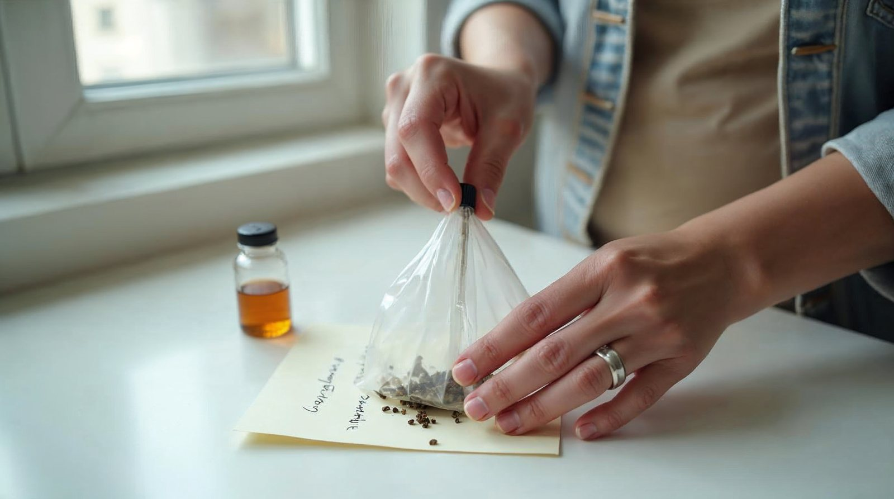
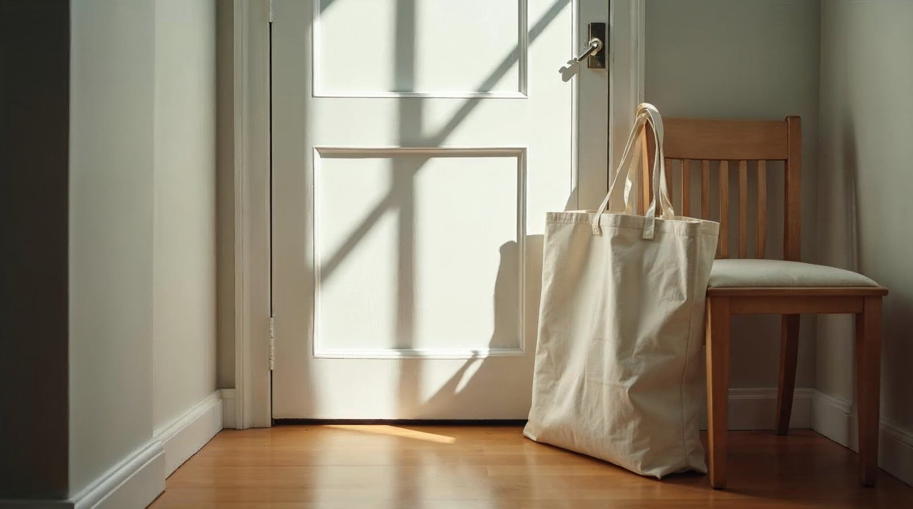
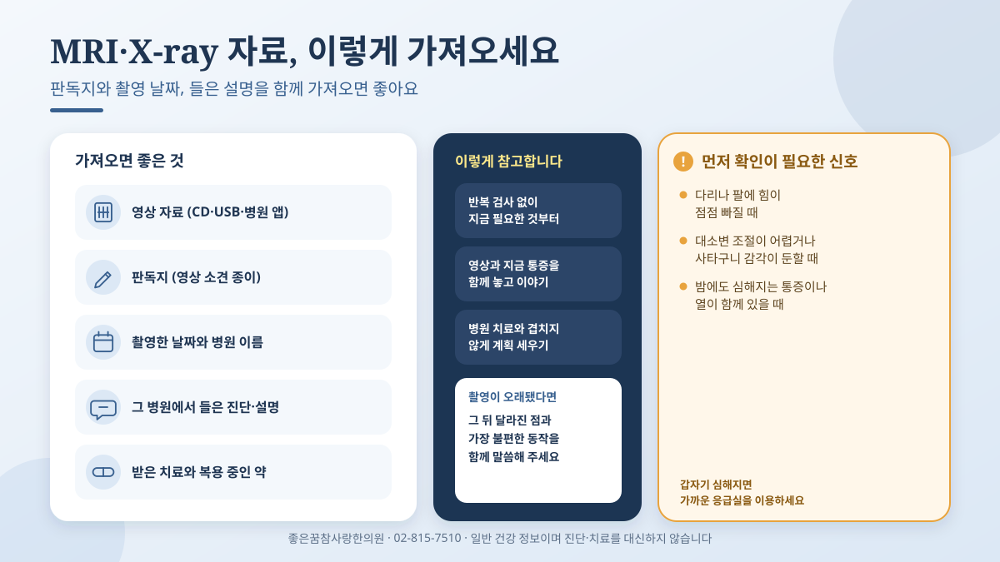

이종호 한의사 감수좋은꿈참사랑한의원 대표원장 (한의사 면허번호 19769)발행 2026-11-23 · 수정 2026-11-26
이 글의 차례
- 왜 검사 자료가 도움이 될까요
- 가져오면 좋은 것
- 왜 영상 소견과 실제 통증이 다를 수 있을까요
- MRI, X-ray, 초음파는 무엇을 보여 주나요?
- 검사에서 이상이 없다는데 왜 계속 불편할까요?
- 검사 결과를 듣고 마음이 불안하다면
- 한의원에서 하는 일
- 판독지는 어떻게 읽어 오면 좋을까요?
- 검사 자료는 어떻게 준비하나요?
- 여러 병원에서 받은 검사가 있다면
- 어깨나 무릎처럼 관절 검사를 받았을 때
- 오래전에 찍은 검사도 쓸모가 있나요?
- 병원 치료와 함께 받고 계시다면
- 수술이나 시술을 권유받아 고민될 때는
- 검사 뒤 집에서는 어떻게 지내면 좋을까요?
- 검사 자료를 가져오는 날은 무엇을 함께 챙길까요?
- 이럴 때는 검사 자료를 꼭 챙겨 오세요
- 한의원에서 함께 살필 수 있는 경우
- 진료실에서는 자료와 몸을 어떻게 함께 보나요?
- 이렇게 기록해 오시면 상담이 쉬워집니다
- 이런 증상은 먼저 확인이 필요합니다
병원에서 찍은 MRI나 X-ray 자료는 판독지와 함께 가져오시면 지금의 불편을 이해하는 데 참고합니다. 허리나 무릎을 병원에서 검사받은 뒤 한의원에서 이어서 상담하는 분이 많습니다. 이때 검사 자료를 가져오면 도움이 됩니다.
병원에서 MRI를 찍고 "디스크가 조금 나와 있네요"라는 말을 듣고 나오면, 손에 든 얇은 CD 봉투가 유난히 무겁게 느껴집니다. 머릿속은 낯선 단어로 가득하고, 이걸 한의원에 가져가도 되는지, 가져가면 뭐라고 설명해야 하는지 막막하지요.
그 막막함을 조금 덜어 드리고 싶습니다. 검사 자료는 지금의 불편을 이해하는 데 좋은 참고가 됩니다. 이 글에는 무엇을 챙겨 오면 좋은지, 영상 소견과 실제 통증은 왜 다를 수 있는지, 그리고 진료실에서는 그 자료를 어떻게 함께 보는지를 적었습니다.
왜 검사 자료가 도움이 될까요
- 이미 받은 검사를 알면 같은 검사를 반복하지 않고 지금 필요한 것부터 살필 수 있습니다.
- 영상에 보이는 모양과 지금 느끼는 통증이 항상 같지는 않아, 둘을 함께 놓고 이야기하면 이해가 쉬워집니다.
- 병원에서 들은 진단과 받은 치료를 알면 겹치지 않게 진료 계획을 세울 수 있습니다.
- 촬영한 지 오래되었다면 그 뒤에 달라진 점을 함께 이야기해야 지금 상태를 제대로 살필 수 있습니다.

가져오면 좋은 것
- 영상 자료(CD나 USB, 병원 앱의 영상)
- 판독지(영상 소견이 적힌 종이)
- 촬영한 날짜와 병원 이름
- 그 병원에서 받은 진단명이나 설명
왜 영상 소견과 실제 통증이 다를 수 있을까요
영상은 한순간을 찍은 사진입니다. 누워 있거나 가만히 서 있는 상태의 모양을 보여 주지요. 그런데 통증은 대개 움직일 때 생깁니다. 허리를 숙일 때, 계단을 오를 때, 오래 앉아 있다 일어설 때처럼요. 그래서 영상에서 본 모양만으로는 어떤 동작에서 왜 아픈지를 다 설명하기 어렵습니다.
또 나이가 들면서 디스크가 조금 얇아지거나 관절 가장자리가 거칠어지는 변화는 많은 분에게 생깁니다. 이런 변화가 영상에 보여도 아프지 않은 분이 있고, 영상은 비교적 깨끗한데 꽤 불편한 분도 있습니다. 영상 소견이 곧 통증의 크기를 뜻하지는 않는다는 것이지요.
예를 들어 판독지에 '퇴행성 변화'라는 말이 적혀 있는 경우, 그 단어만 보고 크게 걱정하시는 분이 많습니다. 그럴 때일수록 지금 어떤 동작이 불편한지, 하루 중 언제 심한지를 함께 짚어 보면 몸 상태가 한결 구체적으로 보입니다.
MRI, X-ray, 초음파는 무엇을 보여 주나요?
X-ray는 주로 뼈의 모양과 배열, 뼈 사이 간격을 보는 데 쓰입니다. MRI는 디스크, 신경, 인대처럼 뼈가 아닌 조직까지 자세히 보여 줍니다. 두 검사 모두 병원에서 찍고, 판독은 영상의학과 전문의가 합니다.
초음파는 힘줄과 근육, 인대 같은 얕은 조직을 실시간으로 볼 수 있습니다. 좋은꿈참사랑한의원에서는 통증 부위의 힘줄과 근육 상태를 눈으로 확인할 필요가 있다고 판단될 때 초음파로 살핍니다. 모든 분께 하는 검사는 아니고, 진찰한 뒤 필요할 때만 씁니다.
이렇게 각 검사가 보여 주는 것이 다르기 때문에, 병원에서 받은 검사와 진료실에서 직접 확인한 움직임을 함께 놓고 보면 더 넓게 이해할 수 있습니다.
검사에서 이상이 없다는데 왜 계속 불편할까요?
"검사는 깨끗하다는데 저는 아파요." 이런 말씀을 하실 때 표정에는 답답함과 함께, 내가 예민한 건 아닌가 하는 걱정이 섞여 있습니다. 하지만 영상에 보이지 않는다고 불편이 없는 것은 아닙니다.
근육이 오래 긴장해 있거나, 힘줄과 근막에 작은 무리가 반복해서 쌓이거나, 자세가 한쪽으로 기울어 특정 부위가 계속 일을 하는 경우는 영상에 잘 드러나지 않습니다. 잠이 부족하고 몸이 지쳐 있을 때 같은 자극도 더 아프게 느껴지기도 합니다.
그래서 진료실에서는 영상 결과와 함께 어떤 동작에서, 하루 중 언제, 무엇을 한 뒤에 불편한지를 자세히 여쭙니다. 그 이야기 속에서 불편의 실마리가 보이는 경우가 많습니다.
검사 결과를 듣고 마음이 불안하다면
낯선 진단명을 듣고 나면 밤에 자꾸 그 단어가 떠오릅니다. 걱정이 커지면 몸은 아픈 곳을 더 조심하느라 굳고, 잠도 얕아지지요. 불안과 통증이 서로를 키우는 것입니다.
그럴 때는 들은 설명과 걱정되는 점을 종이에 적어 보세요. 막연한 걱정이 몇 가지 구체적인 질문으로 정리되면 마음이 한결 가라앉습니다. 그 질문을 들고 진료실에 오시면 지금의 불편과 연결해 함께 이야기하고, 영상에 관한 판단이 필요한 질문은 검사한 병원에 다시 여쭤 보시도록 정리해 드리겠습니다.
한의원에서 하는 일
- 판독지에 적힌 소견을 참고해 지금의 불편과 함께 살핍니다.
- 영상으로 구조를 따로 판단하지 않고, 움직임과 근력을 직접 확인해 지금 불편한 곳을 살핍니다.
- 필요하다고 판단될 때 추나, 침, 약침, 생활 습관 상담을 계획합니다.
- 통증 부위의 힘줄과 근육 상태를 확인할 필요가 있으면 초음파 진단을 상담합니다.
판독지는 어떻게 읽어 오면 좋을까요?
판독지는 낯선 의학 용어로 가득해 읽기 어렵습니다. 다 이해하지 못하셔도 괜찮습니다. 다만 병원에서 설명을 들을 때 의사 선생님이 강조한 말이 있었다면 판독지 여백에 적어 두세요. "4번과 5번 사이", "약간", "신경 쪽으로" 같은 말이 그날의 설명을 떠올리는 데 도움이 됩니다.
인터넷에서 용어를 하나하나 찾아보다 보면 걱정만 커지기 쉽습니다. 궁금한 단어에는 동그라미만 쳐 두시고, 진료실에서 지금의 불편과 연결해 함께 이야기해 보세요. 영상의 판단이 필요한 부분은 처음 검사한 병원의 담당 의사에게 다시 여쭤 보시는 것이 정확합니다.
검사 자료는 어떻게 준비하나요?
영상 CD와 판독지는 검사를 받은 병원에서 발급을 요청할 수 있습니다. 병원마다 절차가 조금씩 달라, 발급 방법은 해당 병원 창구에 확인해 주세요. 병원 앱에서 영상과 결과를 볼 수 있다면 그 화면을 보여 주셔도 됩니다.
판독지가 없다면 병원에서 들은 진단명과 설명을 메모해 오셔도 좋습니다. 자료를 하나도 챙기지 못하셨더라도 진료는 받으실 수 있습니다. 지금 어떤 동작이 불편한지를 직접 확인하는 것이 진료의 출발점이기 때문입니다.
다음 방문 때 자료를 가져오셔도 되고, 진료하며 필요하다고 판단되면 그때 어떤 자료가 있으면 좋을지 따로 말씀드리겠습니다. 처음부터 모든 것을 갖추려고 진료를 미루지 않으셨으면 합니다. 몸의 불편은 기다려 주지 않으니까요.
여러 병원에서 받은 검사가 있다면
같은 부위를 몇 군데에서 검사받은 분도 있습니다. 이럴 때는 자료를 촬영 날짜순으로 정리해 오시면 좋습니다. 봉투마다 날짜와 병원 이름을 적은 메모를 붙여 두시면 진료실에서 한눈에 볼 수 있습니다.
검사마다 들은 설명이 조금씩 달랐다면 그것도 그대로 적어 오세요. 시간이 지나며 무엇이 달라졌는지, 그사이 어떤 치료를 받았는지를 함께 보면 지금의 몸을 이해하는 데 도움이 됩니다.
어깨나 무릎처럼 관절 검사를 받았을 때
관절은 각도에 따라 불편이 크게 달라집니다. 어깨라면 팔을 앞으로 들 때와 옆으로 들 때, 뒤로 돌릴 때 중 언제 아픈지, 무릎이라면 계단을 오를 때와 내려갈 때, 쪼그려 앉을 때 중 언제 불편한지를 떠올려 오세요.
영상에서 힘줄이나 연골에 대한 소견을 들었다면 그 부위와 지금 아픈 자리가 같은지도 진료실에서 함께 짚어 봅니다. 아픈 자리를 손가락으로 가리켜 보여 주시면 살피기 쉽습니다. 필요하다고 판단되면 초음파로 그 부위를 살피기도 합니다.
오래전에 찍은 검사도 쓸모가 있나요?
몇 년 전에 찍은 검사도 촬영 날짜와 함께 가져오시면 참고합니다. 그때 어떤 소견이 있었는지 알면, 지금의 불편이 예전부터 이어진 것인지 새로 생긴 것인지 이야기를 나누는 데 도움이 됩니다.
다만 그 뒤로 넘어지거나 다친 일이 있었거나, 불편의 모양이 크게 달라졌다면 꼭 말씀해 주세요. 지금 상태를 살핀 뒤 필요하다고 판단되면 영상 검사를 안내해 드립니다.
병원 치료와 함께 받고 계시다면
병원에서 약을 처방받아 드시거나 주사, 물리치료를 받고 계신다면 그 내용을 알려 주세요. 겹치지 않게 진료를 계획하는 데 필요합니다. 처방받은 약은 임의로 끊지 마시고, 드시는 그대로 말씀해 주시면 됩니다.
혈액을 묽게 하는 약을 드시면 침이나 약침 뒤 멍이 들기 쉬워 미리 알려 주셔야 합니다. 최근에 주사 치료를 받으셨다면 언제, 어느 부위에 받으셨는지도 함께 알려 주세요. 병원에서 피하라고 들은 동작이 있다면 그것도 꼭 말씀해 주세요.
수술이나 시술을 권유받아 고민될 때는
병원에서 수술이나 시술 이야기를 들으면 마음이 복잡해집니다. 해야 하는지, 조금 더 지켜봐도 되는지, 다른 방법은 없는지 여러 생각이 들지요. 이 결정은 담당 의사와 충분히 상의해서 정하셔야 합니다.
제가 도와드릴 수 있는 것은 받은 설명을 함께 정리하는 일입니다. 어떤 이유로 권유받았는지, 언제까지 결정해야 하는지, 담당 의사에게 더 묻고 싶은 것이 무엇인지 하나씩 짚어 보면, 다음 진료에서 무엇을 여쭤야 할지가 분명해집니다. 지금 겪는 불편과 생활의 어려움도 함께 이야기해 주세요.
검사 뒤 집에서는 어떻게 지내면 좋을까요?
병원에서 주의하라고 들은 내용이 있다면 그것을 먼저 지켜 주세요. 그 밖에는 아픈 동작을 시험하듯 반복하지 말고, 불편한 부위를 따뜻하게 해 주시면 좋습니다. 몸 따뜻하게 지내는 것은 제가 회복의 바탕으로 늘 강조하는 것 가운데 하나입니다.
그리고 하루 한 줄씩 불편을 기록해 보세요. 아침에 일어날 때, 오래 앉은 뒤, 걷고 난 뒤 각각 어땠는지 적으면 됩니다. 영상은 한순간을 보여 주지만, 이런 기록은 시간에 따른 변화를 보여 줍니다. 두 가지를 함께 보면 몸을 훨씬 넓게 이해할 수 있습니다.
검사 자료를 가져오는 날은 무엇을 함께 챙길까요?
자료와 함께 드시는 약 목록을 챙겨 주세요. 약 봉투나 처방전을 사진으로 찍어 오셔도 됩니다. 병원에서 받은 물리치료나 주사 일정이 적힌 메모가 있다면 그것도 도움이 됩니다.
옷은 불편한 부위를 보여 드리기 쉬운 편한 차림이 좋습니다. 허리나 무릎을 직접 살펴야 한다면 너무 꼭 끼는 옷은 피해 주세요. CD는 깨지거나 휘지 않도록 봉투째 단단한 파일이나 가방에 넣어 오시면 됩니다.
이럴 때는 검사 자료를 꼭 챙겨 오세요
아래 가운데 해당하는 것이 있다면 자료를 챙겨 오시면 진료에 많은 도움이 됩니다.
- 병원에서 수술이나 시술 이야기를 들은 적이 있다
- 같은 부위를 여러 병원에서 검사받았다
- 검사 뒤 진단명을 들었지만 설명이 잘 기억나지 않는다
- 검사에서 이상이 없다고 했는데 불편이 계속된다
- 골절이나 금속 삽입물이 있는 부위가 불편하다
해당하는 것이 없더라도 자료가 있다면 가져와 주세요. 쓰지 않게 되더라도, 혹시 필요할 때 다시 찾느라 시간을 들이지 않아도 됩니다.
특히 치료 부위에 금속 삽입물이 있다면 체외충격파 같은 치료를 정할 때 먼저 알아야 하니, 수술 기록이나 관련 설명을 함께 알려 주세요.
한의원에서 함께 살필 수 있는 경우
- 영상 소견은 있는데 통증과의 관계가 궁금한 경우 어떤 동작에서 아픈지 함께 살핍니다.
- 검사에서 큰 이상이 없다고 했지만 불편이 이어지는 경우 근육과 자세를 함께 살핍니다.
- 병원 치료와 한의원 진료를 같이 받고 있는 경우 서로 겹치는 부분을 알려 주세요.
- 수술이나 시술을 권유받고 고민 중인 경우 받은 설명을 함께 정리하고, 결정은 담당 의사와 상의하시도록 안내합니다.
좋은꿈참사랑한의원에서는 먼저 어떤 동작에서 불편한지 충분히 듣고, 진맥을 기본으로 하고 필요하다고 판단될 때 초음파 같은 방법을 더해 살핀 뒤 상태에 맞춰 침·약침·추나 등을 정합니다. 귀가 전에는 집에서 지켜볼 점과 다음에 확인할 일을 알려 드립니다.
진료실에서는 자료와 몸을 어떻게 함께 보나요?
자료를 받아 들면 먼저 촬영 날짜와 판독 소견을 확인하고, 그 뒤로 어떻게 지내셨는지 여쭙습니다. 그다음 서고, 걷고, 앉고, 허리를 숙이고 펴는 동작을 직접 해 보시며 어디가 어떻게 불편한지 봅니다. 손으로 근육의 긴장과 아픈 자리를 짚어 보기도 합니다.
진맥은 모든 분께 합니다. 잠과 소화, 몸의 온기, 대소변도 함께 여쭙습니다. 통증이 오래되면 잠이 얕아지고, 잠이 부족하면 통증이 더 크게 느껴지는 일이 흔하기 때문입니다. 영상이 보여 주지 않는 이런 부분까지 함께 살펴 치료를 정합니다.
치료를 정한 뒤에는 무엇을 왜 하는지 먼저 말씀드립니다. 판독지에 적힌 부위와 오늘 치료하는 부위가 어떻게 이어지는지도 궁금하시면 편하게 물어보셔도 됩니다. 다음 방문 때는 오늘 확인한 동작을 다시 해 보며 달라진 점부터 살핍니다.

이렇게 기록해 오시면 상담이 쉬워집니다
- 촬영한 날짜와 병원 이름, 들은 진단명
- 그 뒤 통증이 어떻게 달라졌는지
- 받은 치료(주사, 물리치료, 약)와 복용 중인 약
- 가장 불편한 동작
- 병원에서 하지 말라고 들은 동작이나 주의 사항
이런 증상은 먼저 확인이 필요합니다
- 다리나 팔에 힘이 점점 빠지는 경우
- 대소변 조절이 어렵거나 사타구니 감각이 둔해진 경우
이런 신호가 있으면 한의원보다 가까운 병원이나 응급실을 먼저 찾으세요.

한의원에서 함께 살필 것
- 영상 소견은 있는데 통증과의 관계가 궁금한 경우 어떤 동작에서 아픈지 함께 살핍니다.
- 검사에서 큰 이상이 없다고 했지만 불편이 이어지는 경우 근육과 자세를 함께 살핍니다.
- 병원 치료와 한의원 진료를 같이 받고 있는 경우 서로 겹치는 부분을 알려 주세요.
먼저 확인이 필요한 신호
- 다리나 팔에 힘이 점점 빠지는 경우
- 대소변 조절이 어렵거나 사타구니 감각이 둔해진 경우
자주 묻는 질문
자료가 없어도 진료를 받을 수 있나요?
가능합니다. 필요하다고 판단되면 영상 검사를 안내합니다.
영상이 오래되었는데 가져가도 되나요?
촬영한 날짜와 함께 가져오시면 참고합니다.
판독지만 있어도 되나요?
판독지만으로도 소견을 이해하는 데 도움이 됩니다.
병원 치료와 한의원 진료를 같은 기간에 받아도 되나요?
받고 있는 치료를 알려 주시면 겹치지 않게 함께 살핍니다. 병원에서 주의하라고 들은 내용이 있으면 꼭 말씀해 주세요.
혈액검사 결과도 가져가면 도움이 되나요?
네. 특히 한약 상담을 생각하신다면 간이나 신장 상태를 확인하는 데 참고가 되니, 받아 둔 결과가 있으면 함께 가져와 주세요.
좋은꿈참사랑한의원은 재진 때 지난번 이야기부터 이어서 여쭙니다. 진료시간과 예약은 오시는 길에서 확인하세요.
어디서 상담받을 수 있나요?
좋은꿈참사랑한의원은 서울 동작구 만양로2길 2 신성빌딩 3층·5층(서울 동작구 상도동, 7호선 상도역 3번 출구 근처)에 있습니다. 한의사 3명(이종호 대표원장, 조영기 수석진료원장, 정원영 진료원장)이 진료합니다. 진료시간은 평일 09:30~20:00(점심 13:00~14:00), 토·일·공휴일 09:30~15:00이며, 방문 전 전화로 확인을 권합니다. 예약은 네이버 예약, 카카오톡 상담, 전화 02-815-7510로 받습니다.
이 글은 일반적인 건강 정보이며 개인의 진단이나 치료를 대신하지 않습니다. 증상이 있거나 복용 중인 약이 있다면 진료를 통해 확인하세요. 치료 효과는 개인마다 다를 수 있습니다.
작성 기준: 일반적으로 알려져 있는 건강 정보를 참고해 정리했습니다(대표원장 감수). 증상 기록은 1~2주 동안 하루 1회, 비슷한 시간에 적어 오시면 지난 상태와 비교하기 쉽습니다.